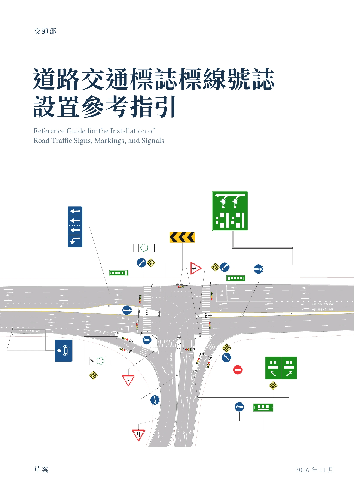

封面 · 點選「下一跨頁」開啟書本指定 PDF 跨頁，保留原始頁序與左右配置。
頁籤忠於原始設定：每頁邊緣色塊取自你提供的 PDF，不重新添加凸出頁籤。書本的書口側面依 navigation-style.typ，以 54 mm 起點、25 mm 高度、6 mm 間距及 12 種 M/G/C 色階標示，書口線條和頁緣切齊。
可拖曳書本調整角度，使用 ← → 翻頁，按「跨頁放大」或點擊單頁閱讀。展示採精選跨頁，切換非連續頁面時以翻頁動畫呈現。
真實 PDF 內頁 × CSS 3D 書本 × 裁切齊平彩色書口

頁籤忠於原始設定：每頁邊緣色塊取自你提供的 PDF，不重新添加凸出頁籤。書本的書口側面依 navigation-style.typ，以 54 mm 起點、25 mm 高度、6 mm 間距及 12 種 M/G/C 色階標示，書口線條和頁緣切齊。
可拖曳書本調整角度，使用 ← → 翻頁，按「跨頁放大」或點擊單頁閱讀。展示採精選跨頁，切換非連續頁面時以翻頁動畫呈現。